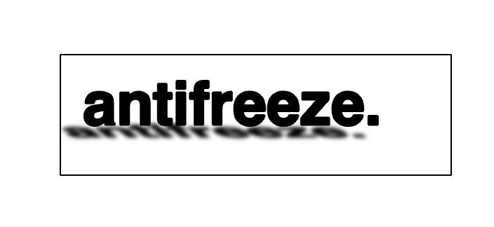

antifreeze journal is an experimental theatre company working in Meanjin.
we take unfinished writing of all sorts and fuse it into a funny and
exciting environmental performance involving a live jazz band and an immersive
setting.
Enter a space foaming with creative freedom and excitment and think to yourself -
"this is some of the best value i've gotten for a theatrical experience in a little bit
of time. I maybe didn't love every second of it, or maybe I did, I'm not sure,
I can't speak for you or your affective experience. But I sure am glad I came and
financially supported a truly collectivistic effort of a whole bunch of artists, writers,
performers, musicians, and other individuals. I particularly appreciate their horizontal
approach to collaboration and the fact that everyone involved is compensated by an even split of the profits.
Antifreeze truly does it for the love of the game.
The fast paced, frenetic style of
performance simmers with an instinctive spontaneity that speaks to their uniquely experimental methodology.
I love magandjin's creative scene and i am so glad to be one of many spiritual energetic nodes
making pathways for the cycles of joy, inspiration, and collective healing"*
* this is a hypothetical scenario and everyone has different experiences.